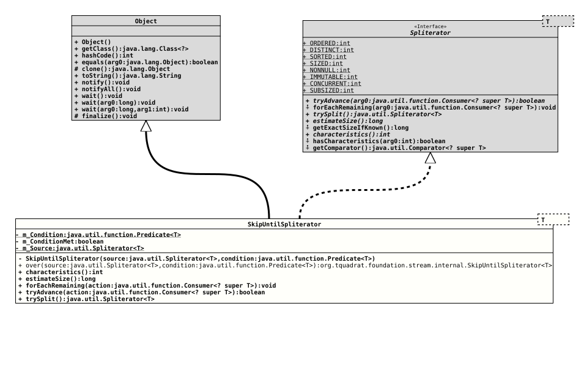

Class SkipUntilSpliterator<T>
java.lang.Object
org.tquadrat.foundation.stream.internal.SkipUntilSpliterator<T>
- Type Parameters:
T- The type over which the given streams stream.
- All Implemented Interfaces:
Spliterator<T>
@ClassVersion(sourceVersion="$Id: SkipUntilSpliterator.java 1119 2024-03-16 09:03:57Z tquadrat $")
@API(status=INTERNAL,
since="0.0.7")
public final class SkipUntilSpliterator<T>
extends Object
implements Spliterator<T>
An implementation of
Spliterator
that skips elements on the stream that do not match the provided condition.- Author:
- Dominic Fox
- Modified by:
- Thomas Thrien (thomas.thrien@tquadrat.org)
- Version:
- $Id: SkipUntilSpliterator.java 1119 2024-03-16 09:03:57Z tquadrat $
- Since:
- 0.0.7
- UML Diagram
-

UML Diagram for "org.tquadrat.foundation.stream.internal.SkipUntilSpliterator"
{kind=link}
-
Nested Class Summary
Nested classes/interfaces inherited from interface Spliterator
Spliterator.OfDouble, Spliterator.OfInt, Spliterator.OfLong, Spliterator.OfPrimitive<T,T_CONS, T_SPLITR> -
Field Summary
FieldsModifier and TypeFieldDescriptionThe condition.private booleanThe flag that indicates whether the condition was met or not.private final Spliterator<T> The source.Fields inherited from interface Spliterator
CONCURRENT, DISTINCT, IMMUTABLE, NONNULL, ORDERED, SIZED, SORTED, SUBSIZED -
Constructor Summary
ConstructorsModifierConstructorDescriptionprivateSkipUntilSpliterator(Spliterator<T> source, Predicate<T> condition) Creates a newSkipUntilSpliteratorinstance. -
Method Summary
Modifier and TypeMethodDescriptionfinal intfinal longfinal voidforEachRemaining(Consumer<? super T> action) static final <T> SkipUntilSpliterator<T> over(Spliterator<T> source, Predicate<T> condition) Factory method for instances ofSkipUntilSpliterator-final booleantryAdvance(Consumer<? super T> action) final Spliterator<T> trySplit()Methods inherited from class Object
clone, equals, finalize, getClass, hashCode, notify, notifyAll, toString, wait, wait, waitMethods inherited from interface Spliterator
getComparator, getExactSizeIfKnown, hasCharacteristics
-
Field Details
-
m_Condition
The condition. -
m_ConditionMet
The flag that indicates whether the condition was met or not. -
m_Source
The source.
-
-
Constructor Details
-
SkipUntilSpliterator
Creates a newSkipUntilSpliteratorinstance.- Parameters:
source- The source stream.condition- The condition to apply to elements of the source stream.
-
-
Method Details
-
over
Factory method for instances ofSkipUntilSpliterator-- Type Parameters:
T- The type of elements for the source spliterators.- Parameters:
source- The source stream.condition- The condition to apply to elements of the source stream.- Returns:
- The instance.
-
characteristics
- Specified by:
characteristicsin interfaceSpliterator<T>
-
estimateSize
- Specified by:
estimateSizein interfaceSpliterator<T>
-
forEachRemaining
- Specified by:
forEachRemainingin interfaceSpliterator<T>
-
tryAdvance
- Specified by:
tryAdvancein interfaceSpliterator<T>
-
trySplit
- Specified by:
trySplitin interfaceSpliterator<T>
-